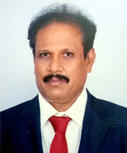

MBBS · Chairman
We are pleased to inform you that, we together as a group perceived the right blend of health and education and heading towards the set objectives. Since its inception, we have been putting a lot of efforts in making the institutions success, by expanding its associated wings in the areas of health & education.
A decade ago, I had thought, later the same contemplation turned into dream, and I dreamt to achieve in the field of health and education started the institution with little resources. The little beginning efforts brought us to enjoy the success and added fuel to keyed up towards further expansion.
I am proud to say that the peopl's blessings and our group support which helped in developing the institutions over the decade. We are also started the nursing college from 2012 academic year. And I wish the success should continue and achieve more in the areas of health and education I convey my sincere gratitude to all the supporters for the success of Subash group of institutions.
I hope group of institutions would go which your expectations and serve for your needs with care.